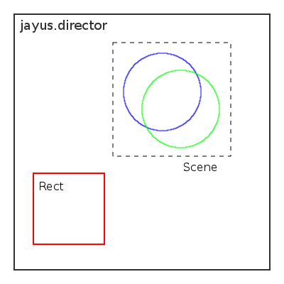

Displays in jayus are scenegraphs, in essence this means that the image on the screen is composed of a number of individual objects that each make up a small part of the image. These objects are referred to in jayus as Entities. Entities are often grouped within other entities such as a Scene or Grid. These objects are also called Nodes.
The reason it is called a scenegraph is due to the fact that the scene composed of entities are ordered into a type of graph known as a tree. A tree is a collection of nodes, each of which have one parent and any number of child nodes that descend from it. The exception to this rule is the root node which has no parent, in Jayus(and all scenegraphs) the root node is represented by the actual display surface, a canvas element. The primary relation between parent and child nodes is spatial, each child is a visible component of its parent, and is moved, transformed, and animated along with its parent. In jayus, a parent node is responsible for drawing its children, firing cursor events on them, and possible managing their position/geometry.
Shown below is a very simple scene where a display has two child entities, a rectangle and a scene, and the scene has two child entities as well, two circles.

The articles below explain some of the systems built in to the Entity class.
Only certain entities can hold children; nearly all of these inherit from the Group class. A entity that contains children must perform extra work of handling rendering, transformation, and events correctly.
{% include prettyprint.html %}